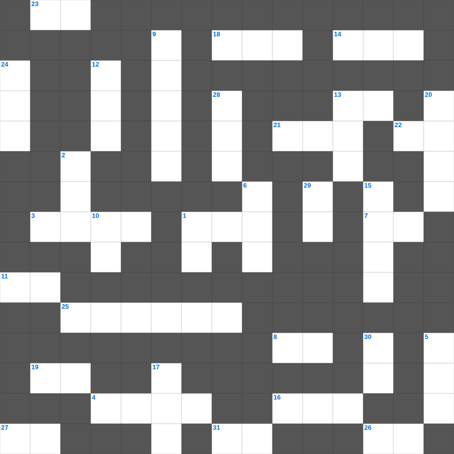

미가: 베들레헴의 통치자
📌 서비스 정의
십자가로세로는 교회 주보와 주일학교에서 사용할 수 있는 성경 기반 가로세로 퍼즐 서비스입니다. 성경 인물, 사건, 핵심 구절을 바탕으로 제작되었습니다. 온라인 풀이 및 인쇄 기능을 제공합니다.
📖 미가란?
미가는 사회적 불의를 질타하면서도 메시아의 탄생지(베들레헴)를 예언하고, 정의와 인자와 겸손을 강조한 예언서입니다.
📚 미가의 주요 사건·주제
사마리아와 예루살렘에 대한 심판 · 메시아의 베들레헴 탄생 예언 · 공의와 인자와 겸손의 요구(미가 6장) · 거짓 지도자들에 대한 경고 · 이스라엘 회복 약속
미가를 주제로 한 미가 낱말 퍼즐입니다. 35개의 단어를 맞춰보세요! 가로세로 낱말 퍼즐 형식으로 미가의 핵심 내용을 재미있게 복습할 수 있습니다.

📝 가로 힌트
1. 언약궤를 모셔두는 가장 거룩한 장소
3. 빌립이 전도한 제자
4. 노동자 하루 품삯에 해당하는 은화
7. 내가 누구를 보내며 누가 우리를 위하여 이것할꼬
8. 이스라엘아 들으라 (신명기 6:4)
11. 예수님을 판 제자
13. 다윗이 피신했던 블레셋 도시
14. 사드락, 메삭, 아벳느고의 신앙
16. 엘리야가 바알 선지자와 대결한 산
18. 하나님의 보좌 앞 일곱 등불
19. 새 예루살렘 성곽의 첫 번째 기초석
21. 좁은 문으로 들어가기를 이것하라
22. 바다의 물고기와 이것들
23. 새 예루살렘 성의 열두 문 재질
25. 신구약 성경 중 가장 짧은 장은? (숫자)
26. 선한 이것은 양들을 위하여 목숨을 버리거니와
27. 하나님의 거룩한 성품
31. 예수님이 십자가에서 돌아가신 사건
📝 세로 힌트
1. 고라 자손의 반역 때 땅이 갈라짐
2. 예수님이 십자가에 못 박히신 곳
2. 예수님이 십자가를 지고 오르신 언덕
5. 노아의 방주에 비가 내린 일수
6. 야곱이 축복을 받기 위해 팔에 붙인 것
7. 야곱이 라반을 피해 도망치다 세운 돌기둥
9. 엠마오로 가던 두 제자가 예수님을 알아본 시점
10. 예수님이 예루살렘 입성 때 타신 것
12. 솔로몬 성전 건축에 쓰인 고급 나무
13. 알곡과 이것의 비유
15. 열두 돌을 세운 요단강가 지명
17. 성경 인물 중 가장 키가 큰 사람은?
20. 베드로가 밤새 그물을 던졌으나 잡지 못했을 때 하신 일
24. 베드로가 하루에 전도하여 세례받은 사람 수
28. 최후의 만찬에서 떡과 포도주를 나누심
29. 죽음에서 다시 살아나심
30. 요나가 다시스로 가기 위해 배를 탄 항구
🧩 이 퍼즐에서 배우는 내용
이 퍼즐은 미가: 베들레헴의 통치자의 핵심 단어와 개념을 자연스럽게 복습할 수 있도록 구성되었습니다. 주일학교 수업이나 개인 성경공부에서 학습 내용을 점검하는 용도로 바로 활용할 수 있습니다.
🧑🏫 교회 교육 자료 활용
이 퍼즐은 주일학교 교재 추천 자료로 활용할 수 있고, 주일학교 주보에 넣기 좋은 분량으로 구성되어 있습니다. 수업용 주일학교 교안에 활동지로 붙이거나, 예배 후 복습용 주일학교 공과교재로 바로 사용할 수 있습니다.
🏷️ 키워드
미가 낱말 퍼즐, 미가, 십자가로세로, 성경퀴즈, 말씀퀴즈, 가로세로퍼즐, 주일학교 교재 추천, 주일학교 주보, 주일학교 교안, 주일학교 공과교재